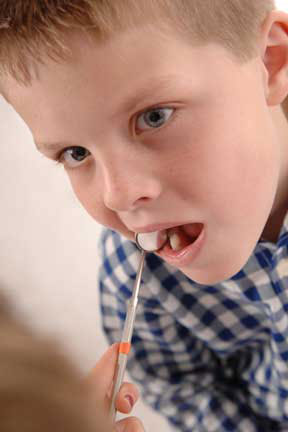

Childrens Dentistry in Evansville, Indiana • East Office (812) 479 - 8609 • West Office (812) 401-6095


Babies are born without the bacteria that cause dental decay (cavities). Babies aquire the bacteria from saliva that is passed from their caregiver’s mouth to their own. Caregivers (usually a mother or father) pass on these germs by sharing saliva, by sharing spoons, by testing foods before feeding it to  babies, by cleaning off a pacifier in their mouth instead of with water, and through other activities where saliva is shared. The germs can start the process that causes cavities even before babies have teeth, so it’s important to avoid sharing saliva with your baby right form the start.